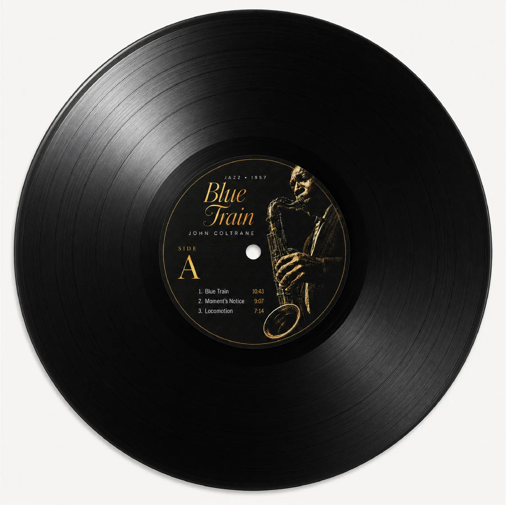
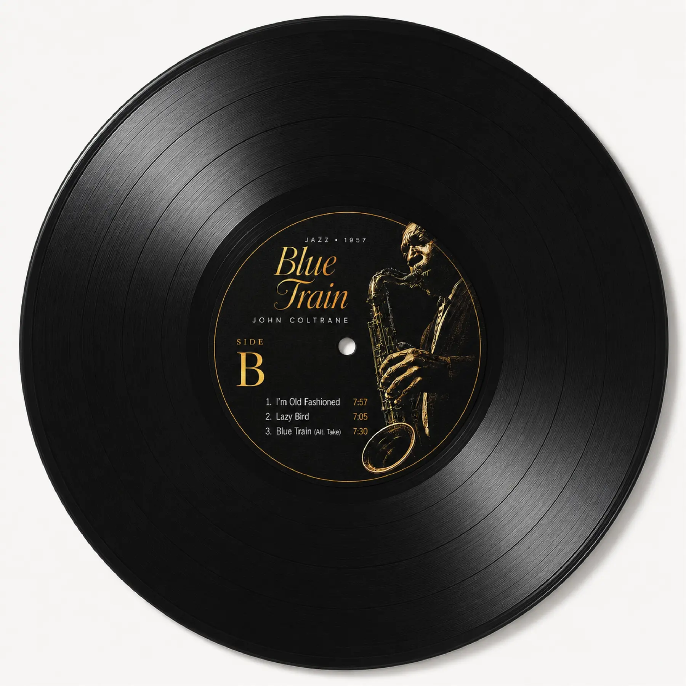
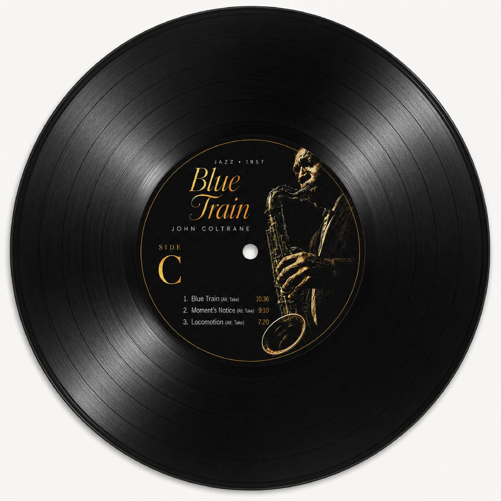
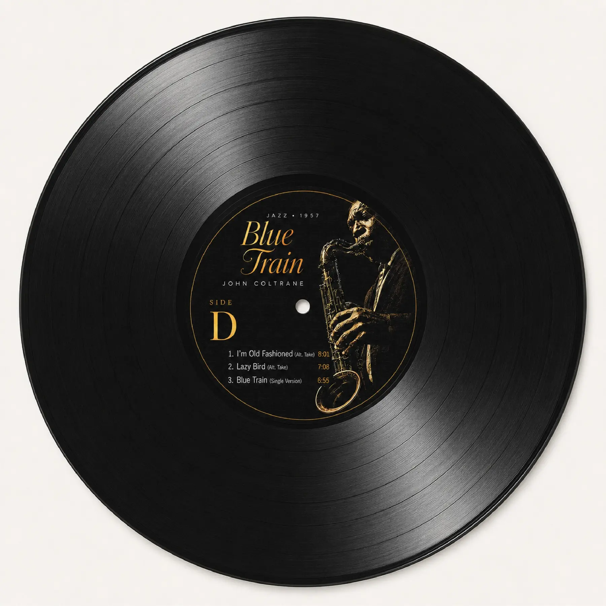
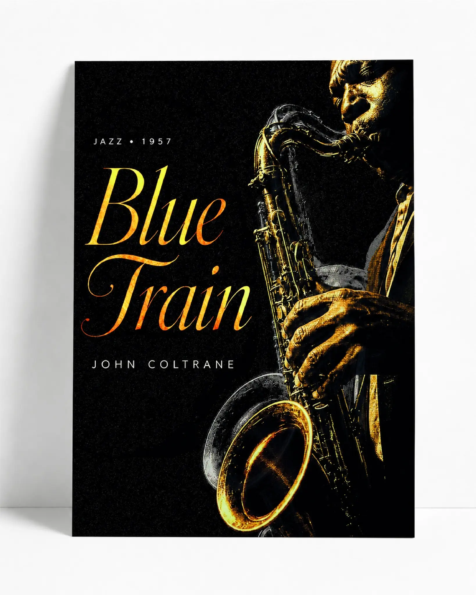
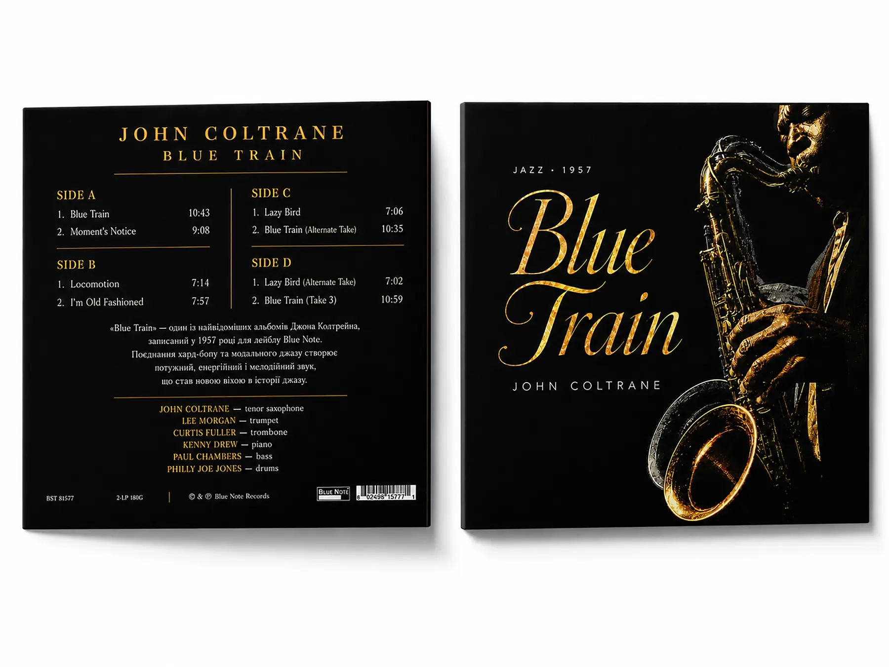
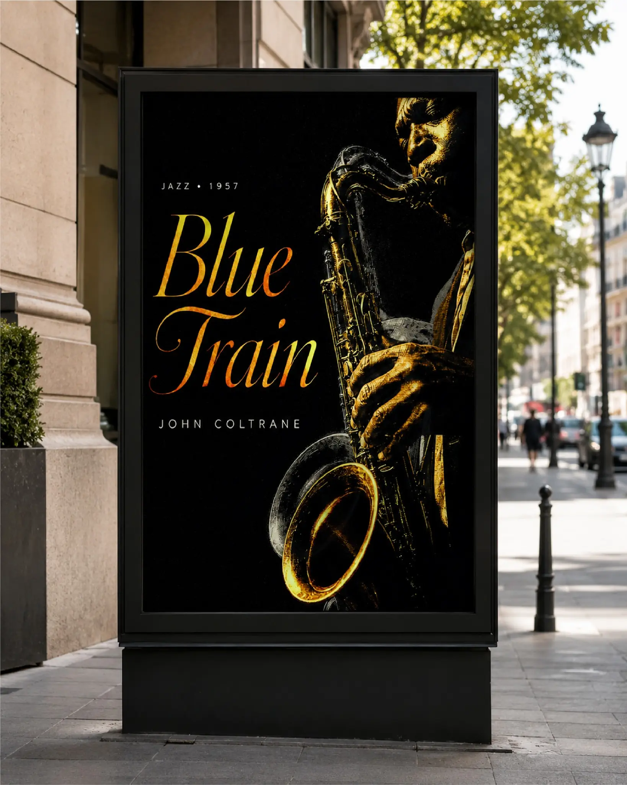

Gold and amber trace the saxophone, hands, and face against a near-black field.
Selected work
Blue
05 / Packaging + visual identity · Academic concept
Blue
Train
A vinyl reissue concept that turns the heat, depth, and elegance of John Coltrane’s sound into one visual system—from sleeve to street.




- My role
- Concept, art direction, typography & packaging design
- Context
- Academic visual communication project
- System
- Cover, back, four labels & outdoor application
- Status
- Unofficial concept; not affiliated with the artist or label
01 / The brief
Make a classic feel physically present.
The task was to create a contemporary visual interpretation for a landmark jazz recording while preserving its gravity. The system needed to work at two very different distances: held in the hands as a record, and read quickly as a street poster.

02 / The central idea
Translate sound into contrast.
The identity is built around opposites found in the music: darkness and brass, discipline and improvisation, stillness and attack. The portrait is treated less like documentation and more like a source of light.
Expressive script carries the album title; spaced capitals organise artist, date, tracks, and credits.
The same portrait, title treatment, and fine rules repeat at different scales without becoming identical.
DISPLAYBlue Train
INFORMATIONJOHN COLTRANE · JAZZ · 1957
#050505#E09B1B#F3EEE3
03 / The physical object
Four sides. One unmistakable centre.
Each label keeps the musician anchored on the right while the side letter and track list occupy the clearest reading zone. Changing content never changes the visual hierarchy, so all four discs belong to the same object.

04 / From sleeve to street
The image keeps its presence at every scale.
At poster scale, the detailed track information falls away. The title, musician, and instrument remain—enough to identify the release from a moving viewpoint without weakening the mood.

Same compositionDifferent viewing distance.
05 / The result
A release system with the atmosphere of a performance.
The finished academic concept connects packaging, label design, information hierarchy, and promotion through one controlled visual language. It demonstrates how a strong art direction can remain expressive while carrying precise track and production information.
- 07
- finished applications
- 04
- coordinated vinyl sides
- 01
- recognisable visual voice